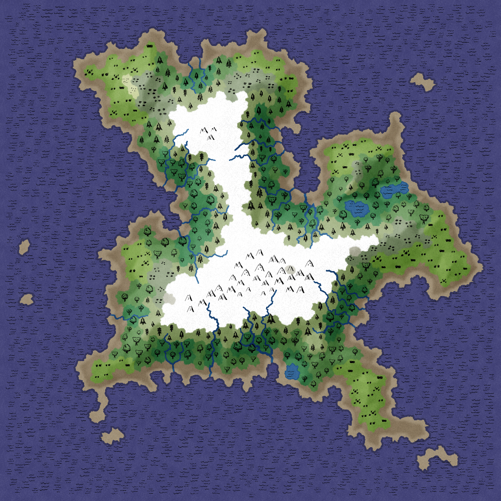
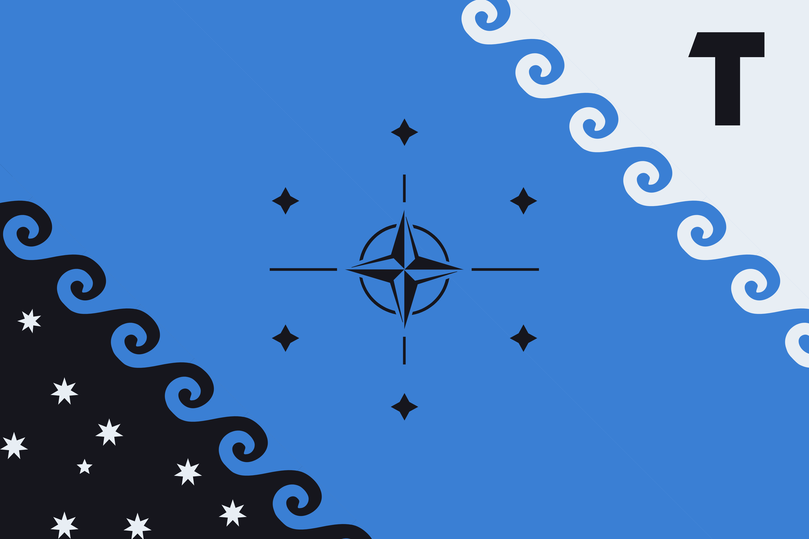
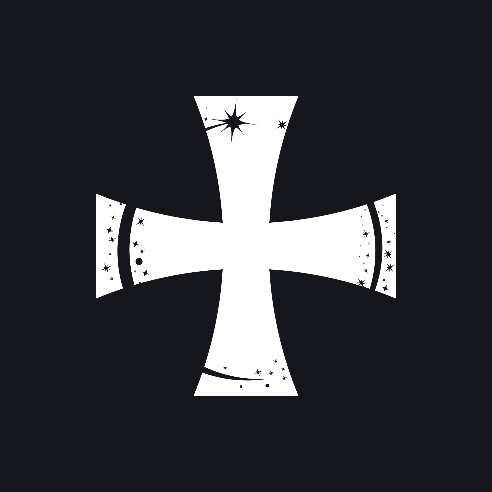

Portail Officiel
Royaume Insulaire de Babel
"La science éclaire, l’histoire guide."
Présentation
Babel est un royaume insulaire souverain situé au croisement des grandes routes maritimes. Entourée par des mers aux courants légendaires, l'île abrite en son cœur une chaîne montagneuse ancienne et de vastes forêts millénaires.
Fondée sur le principe de la navigation comme art de gouverner, Babel doit son nom à la diversité des langues et des peuples qui ont convergé vers ses côtes au fil des siècles.

Identité Nationale
Le drapeau et la monnaie de Babel portent l'histoire et les valeurs du peuple Babelien.

Le drapeau de Babel représente la navigation (bleu cobalt), la vision (noir), et la vie, ne s'arrêtant jamais, ondulante. La rose des vents en son centre symbolise notre capacité à se concentrer sur nos objectifs.

Le Doublon est la monnaie officielle de Babel. Sa pièce maîtresse arbore une croix teutonnique émaillée d'étoiles, hommage aux inquisiteurs navigateurs fondateurs. 500 Dollars (USD) équivaut à ~4349717.25 Doublons (DBL).
Économie & Finances
Convertissez instantanément entre l'USD et les monnaies officielles du Royaume de Babel et des nations officielles.
Histoire & Mémoire
Les grandes pages de l'histoire du Royaume — fondations, conquêtes, traités et instants fondateurs gravés dans la mémoire collective.
Aucune chronique inscrite
Registre Officiel
Chronique officielle des événements, décrets et proclamations du Royaume.
Aucune entrée dans le registre